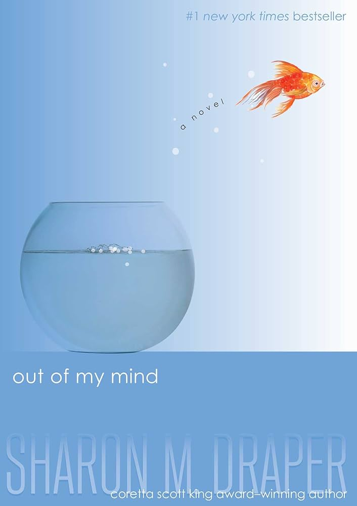

The academic collection
A collection for curious minds.
Course notes, worked examples, and close reading. An orderly place to study a subject, follow an argument, or return to a story.
I. Course notes
AP Lang Notes
Build the connections between a writer's choices, an audience's response, and an argument's purpose.
AP World History Notes
Trace the societies, ideas, and exchange networks that connected the world from c. 1200 to 1450.
Algebra 2 Notes
Work through relations, functions, and transformations with clear rules and checked examples.
II. Literary analysis

Out Of My Mind Analysis
Explore Melody's story through character, context, perspective, and the question of what it means to be heard.
Read the analysis
Of Mice And Men Analysis
Follow George and Lennie through author, context, characters, setting, narration, attitude, theme, and every field of the Active Reading Pamphlet.
Read the analysis